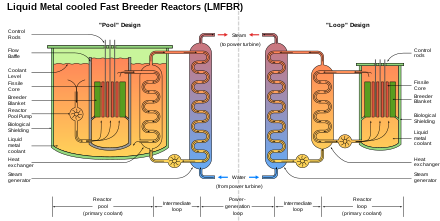

A sodium-cooled fast reactor is a fast neutron reactor cooled by liquid sodium.
The initials SFR in particular refer to two Generation IV reactor proposals, one based on existing liquid metal cooled reactor
(LMFR) technology using mixed oxide fuel (MOX), and one based on the metal-fueled integral fast reactor.
Several sodium-cooled fast reactors have been built and some are in current operation, particularly in Russia.
Others are in planning or under construction. For example, in 2022, in the US, TerraPower (using its Traveling Wave technology
) is planning to build its own reactors along with molten salt energy storage
in partnership with GEHitachi's PRISM integral fast reactor design, under the Natrium
appellation in Kemmerer, Wyoming.
Aside from the Russian experience, Japan, India, China, France and the USA are investing in the technology.
Fuel cycle
The nuclear fuel cycle employs a full actinide recycle with two major options: One is an intermediate-size
(150–600 MWe) sodium-cooled reactor with uranium-plutonium-minor-actinide-zirconium metal alloy fuel, supported
by a fuel cycle based on pyrometallurgical reprocessing in facilities integrated with the reactor. The second
is a medium to large (500–1,500 MWe) sodium-cooled reactor with mixed uranium-plutonium oxide fuel, supported
by a fuel cycle based upon advanced aqueous processing at a central location serving multiple reactors. The
outlet temperature is approximately 510–550 degrees C for both.
Sodium coolant
Liquid metallic sodium may be used to carry heat from the core. Sodium has only one stable isotope,
sodium-23, which is a weak neutron absorber. When it does absorb a neutron it produces sodium-24, which has a half-life of 15 hours and decays to stable isotope magnesium-24.
Pool or loop type

Schematic diagram showing the difference between the Pool and Loop designs of a liquid metal fast breeder reactor
The two main design approaches to sodium-cooled reactors are pool type and loop type.
In the pool type, the primary coolant is contained in the main reactor vessel, which therefore includes the reactor core and a heat exchanger. The US
EBR-2, French Phénix and others used this approach, and it is used by India's Prototype Fast Breeder Reactor and China's CFR-600.
In the loop type, the heat exchangers are outside the reactor tank. The French Rapsodie, British Prototype Fast Reactor and others used this approach.
Advantages
All fast reactors have several advantages over the current fleet of water based reactors in that the waste streams are significantly reduced. Crucially,
when a reactor runs on fast neutrons, the plutonium isotopes are far more likely to fission upon absorbing a neutron. Thus, fast neutrons have a smaller
chance of being captured by the uranium and plutonium, but when they are captured, have a much bigger chance of causing a fission. This means that
the inventory of transuranic waste is non existent from fast reactors.
The primary advantage of liquid metal coolants, such as liquid sodium, is that metal atoms are weak neutron moderators. Water is a much stronger neutron
moderator because the hydrogen atoms found in water are much lighter than metal atoms, and therefore neutrons lose more energy in collisions with hydrogen
atoms. This makes it difficult to use water as a coolant for a fast reactor because the water tends to slow (moderate) the fast neutrons into thermal
neutrons (although concepts for reduced moderation water reactors exist).
Another advantage of liquid sodium coolant is that sodium melts at 371K and boils / vaporizes at 1156K, a difference of 785K between solid / frozen and
gas / vapor states. By comparison, the liquid temperature range of water (between ice and gas) is just 100K at normal, sea-level atmospheric pressure
conditions. Despite sodium's low specific heat (as compared to water), this enables the absorption of significant heat in the liquid phase, while
maintaining large safety margins. Moreover, the high thermal conductivity of sodium effectively creates a reservoir of heat capacity that provides thermal
inertia against overheating. Sodium need not be pressurized since its boiling point is much higher than the reactor's operating temperature, and sodium
does not corrode steel reactor parts, and in fact, protects metals from corrosion. The high temperatures reached by the coolant (the Phénix reactor outlet
temperature was 560 C) permit a higher thermodynamic efficiency than in water cooled reactors. The electrically conductive molten sodium can be moved by
electromagnetic pumps. The fact that the sodium is not pressurized implies that a much thinner reactor vessel can be used (e.g. 2 cm thick). Combined with
the much higher temperatures achieved in the reactor, this means that the reactor in shutdown mode can be passively cooled. For example, air ducts can
be engineered so that all the decay heat after shutdown is removed by natural convection, and no pumping action is required. Reactors of this type are
self-controlling. If the temperature of the core increases, the core will expand slightly, which means that more neutrons will escape the core, slowing
down the reaction.
Disadvantages
A disadvantage of sodium is its chemical reactivity, which requires special precautions to prevent and suppress fires. If sodium comes into contact with
water it reacts to produce sodium hydroxide and hydrogen, and the hydrogen burns in contact with air. This was the case at the Monju Nuclear Power Plant in a
1995 accident. In addition, neutron capture causes it to become radioactive; albeit with a half-life of only 15 hours.
Another problem is leaks. Sodium at high temperatures ignites in contact with oxygen. Such sodium fires can be extinguished by powder, or by replacing the air
with nitrogen. A Russian breeder reactor, the BN-600, reported 27 sodium leaks in a 17-year period, 14 of which led to sodium fires.
Design goals
The operating temperature must not exceed the fuel's melting temperature. Fuel-to-cladding chemical interaction (FCCI) has to be accommodated. FCCI is eutectic
melting between the fuel and the cladding; uranium, plutonium, and lanthanum (a fission product) inter-diffuse with the iron of the cladding. The alloy that forms
has a low eutectic melting temperature. FCCI causes the cladding to reduce in strength and even rupture. The amount of transuranic transmutation is limited by the
production of plutonium from uranium. One work-around is to have an inert matrix, using, e.g., magnesium oxide. Magnesium oxide has an order of magnitude lower
probability of interacting with neutrons (thermal and fast) than elements such as iron.
High-level wastes and, in particular, management of plutonium and other actinides must be handled. Safety features include a long thermal response time, a large
margin to coolant boiling, a primary cooling system that operates near atmospheric pressure, and an intermediate sodium system between the radioactive sodium in
the primary system and the water and steam in the power plant. Innovations can reduce capital cost, such as modular designs, removing a primary loop, integrating
the pump and intermediate heat exchanger, and better materials.
The SFR's fast spectrum makes it possible to use available fissile and fertile materials (including depleted uranium) considerably more efficiently than thermal
spectrum reactors with once-through fuel cycles.
History
In 2020 Natrium received an $80M grant from the US Department of Energy for development of its SFR. The program plans to use High-Assay, Low Enriched Uranium fuel
containing 5-20% uranium. The reactor was expected be sited underground and have gravity-inserted control rods. Because it operates at atmospheric pressure, a large
containment shield is not necessary. Because of its large heat storage capacity, it was expected to be able to produce surge power of 500 MWe for 5+ hours, beyond
its continuous power of 345 MWe.
Reactors
Sodium-cooled reactors have included:
Model
Country
Thermal power (MW)
Electric power (MW)
Year of commission
Year of decommission
Notes
BN-350
Soviet Union
350
1973
1999
Was used to power a water de-salination plant.
BN-600
Soviet Union
600
1980
Operational
Together with the BN-800, one of only two commercial fast reactors in the world.
BN-800
Soviet Union/Russia
2100
880
2015
Operational
Together with the BN-600, one of only two commercial fast reactors in the world.
BN-1200
Russia
2900
1220
2036
Not yet constructed
In development. Will be followed by BN-1200M as a model for export.
CEFR
China
65
20
2012
Operational
CFR-600
China
1500
600
2023
Under construction
Two reactors being constructed on Changbiao Island in Xiapu County. The second CFR-600 reactor will open in 2026.
CRBRP
United States
1000
350
Never built
EBR-1
United States
1.4
0.2
1950
1964
EBR-2
United States
62.5
20
1965
1994
Fermi 1
United States
200
69
1963
1975
Sodium Reactor Experiment
United States
20
6.5
1957
1964
S1G
United States
United States naval reactors
S2G
United States
United States naval reactors
Fast Flux Test Facility
United States
400
1978
1993
Not for power generation
PFR
United Kingdom
500
250
1974
1994
FBTR
India
40
13.2
1985
Operational
PFBR
India
500
2024
Under construction
Monju
Japan
714
280
1995/2010
2010
Suspended for 15 years. Reactivated in 2010, then permanently closed
Jōyō
Japan
150
1971
Operational
SNR-300
Germany
327
1985
1991
Never critical/operational
Rapsodie
France
40
24
1967
1983
Phénix
France
590
250
1973
2010
Superphénix
France
3000
1242
1986
1997
Largest SFR ever built.
ASTRID
France
600
Never built
2012-2019
€735 million spent
Most of these were experimental plants that are no longer operational. On November
30, 2019, CTV reported that the Canadian provinces of New Brunswick, Ontario and
Saskatchewan planned an announcement about a joint plan to cooperate on small sodium
fast modular nuclear reactors from New Brunswick-based ARC Nuclear Canada.